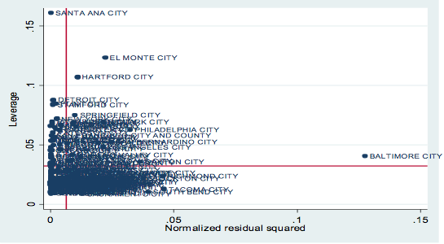

For most residents living in cities, life experience tells them some “common sense” of living, for example, the areas where crowed and noisy are unsafe; the neighborhoods that foreign immigrants and ethnic minorities dominated are unsafe; and the economic status of people directly relates to the chance of crime happened and therefore the lower-class neighborhoods are the dangerous places in the city. No matter these ideas are notions or bias, they are spring from the stance of urban disorganization theory from Chicago School.
The Chicago School constructs an ecological approach to observe and study the urban environment. According to their analysis, the city is not just a residual arrangement of people but contains all the socioeconomic factors, cultural roots, and human nature. “It is an expression of mankind in general and specifically of the social relations generated by territoriality.” (Park 1925:7)
From Social Disorganization perspective, it argues that the changing urban environment and the ecological development of the city result in the increasing of crime, and in this process, the poverty ridden areas are the dangerous areas in the city. (Burgess 1925) In addition, The Chicago School also depicts an image of the city as a place where life is superficial, intimate relations are transitory, and the secondary relations replace the primary relations. Thus, the weakening of primary social relations as a process of social disorganization and certainly the cause of rising crime rate in urban. (Park 1925)
Social Disorganization’s contribution to criminal studies is that it does not blame the individual for causing crime. On the contrary, criminal behavior is part of urban social change rather than the fault of ethnic or racial groups; it is a normal part of society and urban development. Contemporary researchers still focus on economic opportunities, population turnover, and community change to help explaining the changing of crime rates and people’s fear of crime. Thus, based on the original ideas of Chicago School, in this research paper I propose to examine how the economic structure, social structure, education situation, and family structure affect the homicide offense rate in U.S. cities. The purpose of this research is to verify whether the Social Disorganization theory is capable to explain the variation of homicide offense rate in 156 cities around U.S.
As a classical criminological theory, the Social Disorganization perspective has been criticized for a long time. Undoubtedly, this theory is the most accessible theory as we could easily find lots of examples and our own experience to prove its argument. However, it also has so many limitations in the process of explaining urban criminal behaviors. The most obvious disadvantage is that: the theory was constructed based on the development experience of Chicago city which has a relative complex urban construction and environment. It is questionable to applying this theory to the majority middle-scale and smaller cities that without this complex urban structure. For this reason, the study on homicide offense among 156 U.S. cities could response to this major criticism and in certain degree test whether the Chicago School theory still hold the validity in 21st century.
The Social Disorganization theory is the most influent interpretation on urban criminal behaviors in general and the delinquency problem in particular. Many criminology textbooks also start from this theory when they are talking about the origin of urban criminal behaviors. This theory based on the sociology department in university of Chicago, and thus it is also called as the Chicago School. The Chicago School focuses on the high crime rate phenomenon in “transitional neighborhoods” and seeks to understand the accounts.
The emergence of social disorganization theory has closely related to the significant social changes that happened in Chicago. In 1920s, the city of Chicago was undergoing the huge changes following by industrialization; large populations swarmed into Chicago city. In these immigrants, some were from the foreign countries and some were from the other areas in U.S. However, these immigrants with various backgrounds and shared interests, different class or ethnic groups built up their distinctive social groups and led to the emergence of segregated areas in the city. Besides, the new production relations changed social values from “sentiment and prejudice in conservatism” (Park 1925:36) to rational and interests oriented and finally changed the lifestyles in the city.
Indeed, with the development of industrialization and urbanization, people’s life style is quite different with the past. In 1930s, the sociologist Louis Wirth (1938) reminded us that the city life would be the people’s way of life in the future; the pure traditional social life would disappear and the social control would be weakened, which would be the causes of the rising of social problems and the increasing of criminal rates. It can be said that, as the result of urbanization, the society becomes more and more complex and the social heterogeneity consistently increases, thus the strength of social control is weakened. That is the fundamental reason why the deviant behaviors and criminal behaviors happened more in the big cities in U.S. as well as the basic argument the social disorganization theory provided to us.
In summary, the social disorganization theory has the following basic arguments: First, from the Functionism stand, social disorganization theory holds that the human society depends on each other and maintains a certain level of balance. Second, from the social order viewpoint, social disorganization theory argues that when the society has a high cohesion to closely combine the individuals with the system, the social organization will appear and the social order will possibly exist. Third, from the social norms viewpoint: social disorganization theory holds that the social norms are shared value and common goals that every person tries to achieve. The social norms must be a social consensus that all of us are willing to accept. Fourth, to answer why the deviance appeared, social disorganization theory argues that when the consensus of value and norms is set up but the traditional standard cannot actually play a role, then the social conflict, social disorganization, and many deviant behaviors will appear with it. Simply speaking, the social disorganization theory emphasizes that, when the social system equilibrium mechanism is interfered by social changes, the conflicts and the disorganization are most likely to occur; the social control power will weaken and the criminal behaviors will naturally follow.
In the book The City, Park (1925) explored the social changes and the social disorganization. Park pointed out that, when the society is increasingly heterogeneous, it can predict that the primary relationship changed and the close relations can easily become worse, which leads to the decay of traditional social control mechanism that based on community and family. Thus, the urbanization, industrialization, and population flow destroyed the urban conventional daily life and finally resulted in the high criminal rate. Based on this idea, Park and Burgess proposed the “concentric model” to explain the growth of U.S. cities. They argued that urban developments had a common phenomenon, which is the expansion from the center to the periphery. During this expansion process, the zone of transition is more socially disorganization than other area.
In the book, Juvenile Delinquency and Urban Area (1942), Shaw and McKay used the Park and Burgess’s Concentric Zone model to study the issue of juvenile delinquency. They examine the delinquent juvenile arrest rate in Chicago from three periods: 1900-1906, 1917-1923, and 1927-1933, which are the high immigration periods in the history of Chicago city. Comparing the delinquency rate of three different periods, Shaw and McKay believed that the juvenile delinquencies have little related to their ethnic groups, but highly related to the environment that they are living. They developed social disorganization into a theory of crime and delinquency and argued that the changing urban environment and the ecological development of the city created neighborhoods with great affluence and others wracked by extreme poverty. The poverty ridden areas they called Transitional Neighborhoods, because they were often changing, with people moving in and out at high rates, and little stability. Often immigrants from Europe ended up in these transitional neighborhoods. The problems of assimilating or keeping the old ways created communities with little collective conscience. Informal social control breaks down and crime increases.
Shaw and McKay argued that in transitional neighborhoods deviant and conventional values and role models compete side by side with each other. When one sees that wealth is important as a conventional value, but the most successful people in the neighborhood are criminals, youth may choose the deviant path. Eventually, some youth band together into gangs. But the deviant behavior creates value conflict with middle class values about abiding by the law, which forces the deviants to further remove themselves from conventional society.
Shaw and McKay have remained important of over 70 years in criminology. Social Disorganization’s positive attributes are that it does not blame the individual for causing crime. Crime is part of urban social change, not particular ethnic or racial groups; it is a normal part of society. Modern researchers still focus on economic opportunities, population turnover and community change to help explain crime rates and fear of crime. For example, Elijah Anderson has found that in poor, African American neighborhoods of large cities residents are socially isolated and believe that permanent unemployment, police brutality, imprisonment, drugs and AIDS are all part of a conspiracy to eliminate the residents.
Thomas and Znaniecki (1920) in their book The Polish Peasant in Europe and America, proposed that when a social group suffers from the impacts of new culture and living habits, at the same time cannot effectively get involved in the mainstream social norms, the social disorganization will occur. Thus, the social disorganizations are most common at the time of social rapid changes, especially when the society faces many immigrants. Thomas and Znaniecki defined social disorganization as that the existing social norms cannot effectively control individual behaviors; the influence of social norms to the individual is weakened. Facing the rapid social change, individuals developed the new social culture and attitude, which will certainly weaken the social orders.
Related to social disorganization is the idea that lower class delinquents are responding to a lower-class subculture that is distinguished by female headed households and one sex peer units (men socialize mainly with other men, females with females, not men and women together) (Miller 1960) Besides, the contemporary scholar Stark (1987) put forward the deviant places theory. He found that the high criminal rate has the following characteristics: high population density, poor, high mobility, deserted, and the residents have the cynicism psychology.
Based on the theoretical background and literature review, I propose four hypotheses to examine whether the economic structure, social structure, education situation, and family structure affect the homicide offense rate in 156 U.S. cities.
Hypothesis 1: The cities with higher median household income have lower homicide offense rate.
Hypothesis 2: The cities with higher percentage of foreign born immigrants have higher homicide offense rate.
Hypothesis 3: The cities with higher black/white dissimilarity index of segregation have higher homicide offense rate.
Hypothesis 4: The higher percentage of female head household with kids in the cities, the higher homicide offense rate.
Hypothesis 5: The higher percentage of age 25+ with diploma in the cities, the lower homicide offense rate.
Hypothesis 6: The cities in Northeast areas has lower homicide offense rate than other regions in U.S.
Data Resource
The analysis is based on the data collected from a large sample of U.S. cities drawn from UCR and Census sources. The Census variables were taken from the 2000 Census of Population and Housing: Summary File 3 (SF3). Arrest data was taken from the raw data files of the Uniform Crime Reporting program. Homicide offense data was taken from the UCR Supplemental Homicide Reports (SHR). Counts of police officers and police employees were taken from UCR police Employee (LEOKA) data.
In Census 2000, respondents were allowed to indicate multiple races. Where tables are repeated for categories of race, the data are for people who reported a single race. The variables for Hispanics include Hispanics who reported any race, or combination of races. Except for measures of the racial composition of the population, race=specific percentages are calculated with a race-specific denominator.
Dependent variable and Independent variables
The dependent variable in this study is the homicide offense rate per 100,000 populations, which is the important and most common index to evaluate the criminal behaviors and urban safety in the U.S. For the independent variables, I have chosen from four dimensions which theoretically (from the prior literature review) will affect the urban criminal rate. In social structure aspect, I choose the median household income, percentage of foreign born, and the black/white dissimilarity index of segregation as my independent variables. In family structure aspect, I choose the variable of percentage of female head household with kids as the main index. In education aspect, I choose the percentage of age 25+ with diploma to evaluate the influence of education situation on homicide offense rate. Besides, in this model, I recode the region as the dummy variable to analyze whether the regions (differentiate it as northeast and non-northeast) are the main index to affecting the urban homicide offense rate in U.S.
Methods
Because the dependent variable and most independent variables are ratio level, I estimate an ordinary least squares (OLS) to estimating the parameters in a linear regression model. The method of OLS is to minimize the sum of squared vertical distances between the observed responses in the dataset and the responses predicted by the linear approximation, and the resulting estimator can be expressed by a simple formula.
There are six independent variables in my model: median household income, percentage of foreign born, the black/white dissimilarity index of segregation, percentage of female head household with kids, percentage of age 25+ with diploma, and region. And the dependent variable is the homicide offense rate per 100,000 populations. From Table 1, we can get a thorough review on the characteristics of our variables. First, my dependent variable, the homicide offense rate per 100,000 populations, it shows that the mean is .149913, minimum is 0, and maximum is .6495819. Also, the standard deviation (.0131161) and skewness (1.239846) tell us that the distribution of this dependent variable is not perfectly symmetrical; the skewed part is to the right. Second, the normality of my first independent variable, median household income, is also not normally distributed and the skewed part is to the right because of the descriptive statistics in the table below. Third, the other two independent variables, the percentage of female head household w/kids and percentage of foreign born, are not perfectly normally distributed as well due to the mean (9.064427 and 15.93443), S.D. (10.91634 and 12.10679), skewness (.8186792 and .9413187). Forth, the normality of my independent variable, percentage of age 25+ with diploma, is also not normally distributed; however, its skewed part is to the left side which means most numbers stay on the left. (Mean: 78.22731, S.D.: 9.313409, and Skewness: -.9631799). Last, the variable, black/white dissimilarity index of segregation shows a nearly normal distribution. From its Mean (.4387559), S.D. (.1760903), Minimum (.1370051), Maximum (.8462363), and Skewness (.149791), we can see that the distribution approaches to the normal and the skewness is very small, which indicates that there are no more counts in the tails.
Before I run my regression model, the most important step is to test the corrections and covariance among my variables. First, through the testing of corrections between single independent variable and my dependent variable, I choose these six independent variables in my model since they all highly corrected to my dependent variable (the homicide offense rate per 100,000 populations). More specifically, the coefficient between dependent variable and median household income is -.5393, which indicates a moderate negative relationship between these two variables. The coefficient between dependent variable and the percentage of female head household w/kids is .6766, which shows a strong positive relationship between these two variables. The coefficient between dependent variable and percentage of age 25+ with diploma is -.4372, which indicates a moderate negative relationship between these two variables. The coefficient between dependent variable and percentage of foreign born is -.2465, which indicates a weak negative relationship between these two variables. Finally, the coefficient between dependent variable and black/white dissimilarity index of segregation is .5814, which indicates a moderate positive relationship between these two variables. In short, the tests of corrections and covariance among my variables show that there will be overt linear relationships between the dependent variable and my supposed independent variables and dependent variable.
TABLE 1 Summary and Descriptive Statistics
|
Dependent Variable |
Mean |
Std. Dev. |
Min. |
Max. |
Skewness |
|
Homicide offense rate per 100,000 population |
.149913 |
.0131161 |
0 |
.6495819 |
1.239846 |
|
Independent Variable |
|
|
|
|
|
|
Median house hold income |
40855.14 |
11274.07 |
24536 |
78722 |
1.240855 |
|
% Fem. head. House hold w/kids |
9.064427 |
10.91634 |
3.280279 |
20.94769 |
.8186792 |
|
% Age 25+ w/h. s. diploma |
78.22731 |
9.313409 |
43.22918 |
95.81795 |
-.9631799 |
|
% Foreign born |
15.93443 |
12.10679 |
1.142736 |
54.40689 |
.9413187 |
|
Black/white dissimilarity index of segregation |
.4387559 |
.1760903 |
.1370051 |
.8462363 |
.1497911 |
Model Summary
The multiple regression model which showed in Table 2 strives to examine in what degree the urban homicide offense rate per 100,000 populations have been influenced by six independent variables from four aspects: social factors, family structure factors, education factors, and region factor. They independent variables are: median household income, percentage of foreign born, the black/white dissimilarity index of segregation, percentage of female head household with kids, percentage of age 25+ with diploma, and region. In the regression table, first the F-test is 37.26 with the sig. = .000, which indicates that there is a statistically significance relationship between urban homicide offense rate per 100,000 populations and six independent variables. The adjusted R Square is .5871, giving us information about the model as whole. It means 58.71% of the variation in urban homicide offense rate per 100,000 populations can be explained by these six independent variables.
Significance Tests of Coefficients
Before conducting the relationship analysis by standardized coefficients, it is necessary to hypothesis significance tests first.
First of all, the null hypothesis of F-test assumes that：:==0, which means the null hypothesis is discredited when the F is big and p-value is small enough according to the F table. In this case, the F=37.26 and p=value is 0.0000, indicating that the means are significantly different. The p-value is even less than 0.001 illustrates there is a statistically significance relationship between urban homicide offense rate per 100,000 populations and six independent variables.
TABLE 2 Multiple Regressions Model (N=156)
|
Unstandardized Coef. |
Standardized Coef. (beta) |
|
|
Median household income |
6.98e-07 |
.0685004 |
|
|
% of foreign born |
.0004697 |
.0498821 |
|
|
Black/white dissimilarity index of segregation |
.275033 |
.4222003*** |
|
|
|
|
|
|
% Fem. head. House hold w/kids |
.0181485 |
.5222513*** |
|
|
|
|
|
|
% of age 25+ w/h. s. diploma |
-.0022981 |
-.187442* |
|
|
|
|
|
|
Northeast |
-.0727301 |
-.2270938*** |
|
|
% Fem. head. House hold w/kids in Northeast |
.0025427 |
.0025427 |
|
*p <.10. **p <.05. ***p <.001.
Second, for the first independent variable, median household income, I present a null hypothesis that::=0 to conduct two-tailed t test, while my alternate hypothesis is :≠0. Here I give a pre-determined alpha level of 0.05 (α =0.05). By examining the p value, p value of 0.462 is larger than α value of 0.05; it indicates that I cannot reject the null hypothesis and accept the alternate hypothesis. Thus, the relationship between urban homicide offense rate per 100,000 populations and median household income is not statistically significant. Similarly, the coefficient of my second independent variable of percentage of foreign born is also statistically insignificant (p value = .609). Thus, I cannot accept the relationship between urban homicide offense rate per 100,000 populations and these two independent variables as their coefficients are statistically insignificant.
In Table 2, it shows that the coefficients of other independent variables are statistically significant. In third independent variable, the black/white dissimilarity index of segregation, the p value is .000, which is smaller than .001. It means the positive relationship between urban homicide offense rate per 100,000 populations and the black/white dissimilarity index of segregation is moderate and statistically significant. It is a good index in my model. In fourth independent variable, the percentage of female head household w/kids, the p value is .000 that is also smaller than .001. Thus, the strong positive relationship between urban homicide offense rate per 100,000 populations and percentage of female head household w/kids is statistically significant. Also, the coefficient of another independent dummy variable, the region of northeast, is statistically significant. The p value is .000, which is also smaller than .001. The negative relationship between urban homicide offense rate per 100,000 populations and region of northeast is statistically significant.
However, the coefficient of my independent variable, percentage of age 25+ with diploma, is in-between the statistically significant and statistically insignificant. The p value is .089, which is not smaller than .001 but still below .010. Thus, in the strict sense, the relationship between urban homicide offense rate per 100,000 populations and percentage of age 25+ with diploma is not statistically significant. But in broader way, I still counted it as statistically significant negative relationship based on the alpha level of .10.
Finally, even though the overall model and most regression coefficients are statistically significant, I also need to test the substantive significance as it involves the real-world relevance of the statistical findings and the theoretical analysis. In this model, the two statistically insignificant estimated coefficients of median household income and percentage of foreign born are also very small ( = .0685004; = .0498821). This means the positive relationships between urban homicide offense rate per 100,000 populations and these two independent variables are both statistically insignificant and substantive insignificant. At the same time, other estimated coefficients of varibales are both statistically significant and substantive significant based on the previous theoretical analysis.
From the unstandardized coefficients in table 2, we can see the unstandardized coefficient of median household income is abnormal (6.98e-07). The reason is perhaps the different units of measurement between household income and other variables. According to the data, the mean of the median household income is 40855.14 dollars while the homicide offense rate and black/white dissimilarity index of segregation are measured as rate between 0 and 1. Besides, the units of measurement of regions, percentage of female head household with kids, and percentage of age 25+ with diploma are also small. Thus, it is necessary to standardize the coefficients in order to achieve the accurate beta to evaluate the influences of these six variables on the urban homicide offense rate per 100,000 populations.
According to the standardized coefficients (beta) in Table 2, first the beta3 shows there is an effective positive relationship between urban homicide offense rate per 100,000 populations and the black/white dissimilarity index of segregation in that the standardized coefficient is .4222003. At the meantime, there is a strong positive relationship between urban homicide offense rate per 100,000 populations and percentage of female head household w/kids in that the standardized coefficient is .5222513. Also, the negative relationship between urban homicide offense rate per 100,000 populations and region of northeast is also effective (beta6 = -.2270938). Last, loosely speaking, the negative relationship between urban homicide offense rate per 100,000 populations and percentage of age 25+ with diploma (beta 5 = -.187442) is also can be treated as active. Thus, based on the y-intercept (constant) of .0186089 and the four statistically significant coefficients, I can draw a formal of this linear relationship: Y = .0186089 + .4222003X + .5222513X2 - .187442X3 - .2270938X4.
Nonlinearity and Interaction Effects Analysis
To ensure the validity of this linear regression model, I assess potential nonlinearity in one of my independent variable, black/white dissimilarity index of segregation. From Figure 1 it is obvious that the relationship between urban homicide offense rate per 100,000 populations and black/white dissimilarity index of segregation is linear; the fitting line shows the positive linear relationship here. Thus, the potential nonlinearity does not exist in this independent variable.
To evaluate the conditional effects of my model, I include one interaction term. I suspect the cities with higher percentage of female head household with kids will have the higher urban homicide offense rate and this effect will be stronger in the Northeast. Based on this, I created an interaction term, to model the interaction effects. From Table 1, we can see the coefficient for the percentage of female head household w/kids in northeast is .0025427, which represents the effect of higher percentage of female head household with kids with higher urban homicide offense rate is larger in the northeast by .0025427. Because of the small number of this coefficient and statistically insignificant (p = .104), I choose to drop this interaction term from my regression model.
Figure 1 Test of Potential Nonlinearity in Black/White Dissimilarity Index of Segregation
Although I have created an effective regression model, which can explain the 58.71% of the variation in urban homicide offense rate per 100,000 populations by four active independent variables. However, the certain assumptions of OLS regression and other issues still need to be considered.
Heteroskedasticity
In my regression model, it clearly shows evidence of heteroskedasticity. I used both graphical test and statistical test to prove that issue. From Figure 2, we can see that the residuals are equally distributed over the line at first and then dispersed at the end, which stands for the variation around the mean of residuals (0) across predicted value of Y is not constant. Also, the statistical test (Cook-Weisberg test) which is designed to test null hypothesis that the variance is homoscedastic, also shows the issue of heteroskedasticity (null sig. = .000).
Normality of residuals
To test the regression assumption of normally distributed of error, I use both visually and mathematically methods to identify whether the error term is normally distributed in my model. From Figure 3, the normality of residuals is approaching to the normal density. Also, both pnorm graph (sensitive in middle range) and qnorm graph (sensitive in tails) show that the distribution of residuals is almost normal. Thus, this regression model does not against the assumption of normally distribution of residuals.
Figure 2 Plot Graph of Heteroskedasticity
Figure 3 Kernel Density Estimate
Multicollinearity
Multicollinearity refers to the higher correlations among the variables, which is extremely harmful for a regression model as it affects the accuracy of coefficients. Thus, in this model diagnosis, I checked the matrix of two-variable correlations among all the independent variables. In the regression I proposed first, the median household income is highly correlates to other variables, such as percentage of female head household w/kids and black/white dissimilarity index of segregation. Due to the statistically insignificance of the coefficient of median household income and the high multicollinearity (b = -.7088), I decide to drop this independent variable. After that, by rerunning a two-variable correlation matrix among other independent variables, it shows that the multicollinearity is decreased. The highest multicollinearity is -.5479 between percentage of female head household w/kids and percentage of age 25+ with diploma, while other correlations coefficients among other independent variables are all below +/- .500. Even the independent variables are still correlated but at least the effect of multicollinearity has limited to the certain degree.
Outliers/leverage/influence
To determine whether any specific case is exerting an undue influence on my regression model, first, I examine the basic scatterplots of each independent variable with the dependent variable. The scatterplot of specific variables are avplots all indicate that the Baltimore City is the outlier (See Figure 4). Besides, through examining “studentized” residuals, it also shows that Baltimore City is the highest in the list of “rstudent”.
In testing the issue of leverage, I found that the Santa Ana City is the highest in the list. Then, I used lvr2plot to examine outliers and leverage jointly and the result (Figure 5) shows that Baltimore City with high squared residual and Santa Ana City holds high leverage. Therefore, we can see these two cities are the most problematic, yet neither is high on both. Finally, by employing the overall measures of influence (Cook’s D and DFITS), they also show that Baltimore City and Santa Ana City have great influence on my results.
Figure 4 Added Variable Plots for Testing Outlier
Figure 5 lvr2plot Test for outliers and leverage

As the urban homicide offense rate is the important index to evaluate the crime rate and urban safety, concerns rose about the factors contributing to the changing of urban homicide offense rate in various locations. The Chicago School and related contemporary scholars suggested that the economic opportunities, immigration, segregation, broken primary relationship, and education opportunities all affect the changing of urban crime rate. Based on this idea, I propose an original multiple regression model with six independent variables from four aspects (social structure, family structure, education opportunities, and region). However, through the examination on the coefficients and significant tests as well as the model critique, I dropped two independent variables from social structure aspects. Finally, the revised model examines the in what degree the black/white dissimilarity index of segregation, percentage of female head household with kids, percentage of age 25+ with diploma, and region influence the urban homicide offense rate in 156 U.S. cities. In short, I reject the Hypothesis 1 and Hypothesis 2 while the Hypothesis 3, Hypothesis 4, Hypothesis 5, and Hypothesis 6 have been accepted. The result tells us that both the black/white dissimilarity index of segregation and percentage of female head household with kids positively relates to the urban homicide offense rate, and the relationships are moderate. Also, the percentage of age 25+ with diploma negatively affects the urban homicide rate, which means the higher percentage of age 25+ with diploma, the lower urban homicide rate. Last, there is a weak negative relationship between the northeast or non-northeast and urban homicide offense rate; the urban homicide offense rate in northeast cities is relatively lower than other areas in U.S.
This result contributes to the revisit of classical Chicago School in general and social disorganization theory in particular and proves that some main arguments in this theory still fit in the current situation. It highlights the importance of segregation and female head household with kids in affecting the homicide rate. However, the weakness and limitations of this model are the heteroskedasticity and multicollinearity among the variables, the particular outlier and leverage effects in this model, and the relative small sample size.
In terms of the policy implications and future research, this result suggests the policy implications of increasing educational opportunities for youth, fostering racially integration, and helping the reconstruction of female head household with kids, while the researches focusing on these aspects need to be developed.
Burgess, W. Ernest. 1925. “The Growth of the City: An Introduction to a Research Project.” Chicago, IL: University of Chicago Press.
Faris, Robert E. and H. Warren Dunham. 1965. Mental Disorders in Urban Areas. Chicago, University of Chicago Press.
Park, E. Robert. 1925. “The City: Suggestions for the Investigation of Human Behavior in the Urban Environment”. Chicago, IL: University of Chicago Press.
Sellin, Thorsten. 1938. Culture Conflict and Crime. Bulletin 41, Social Science Research Council.
Shaw, Clifford R. 1930. The Jack Roller: A Delinquent Boy’s Own Story. Chicago: University of Chicago Press.
——————. 1931. The Natural History of a Delinquency Career. Chicago: University of Chicago Press.
Shaw, Clifford R. & Henry D. McKay. 1942. Juvenile Delinquency in Urban Areas. Chicago: University of Chicago Press.
Shaw, Clifford R., Henry D. McKay & James F. MacDonald. 1938. Brothers in Crime. Chicago: University of Chicago Press.
Williams, P. Frank and McShane D. 2009. Marilyn. Criminological Theory. Prentice Hall; 5 edition.